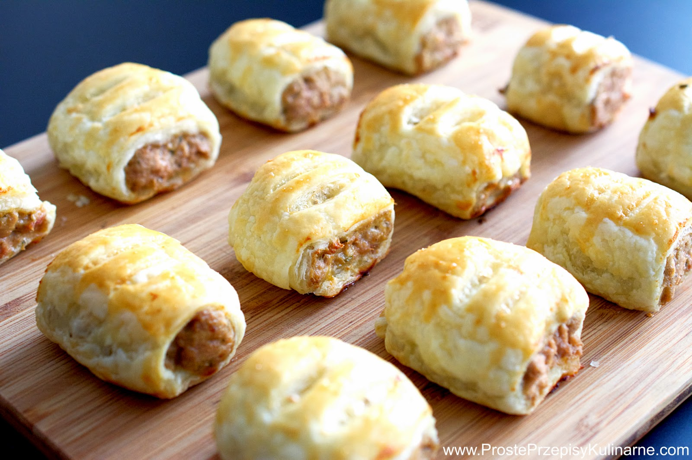

przepisy po polsku

aby dać Ci jak największą wygodę.
Rozumiem!przepisy po polsku
Kolekcje użytkownika Beata Dziedzic
1.24tys. Pinów • 113 obserwujących Przepisy Na Ciasto Przepisy Na Desery Pyszne Jedzenie Przepisy Na Deser Przekąski Słodycze Desery Dobre Jedzenie Przepisy Na PotrawySernik z musem czekoladowym
Blog kulinarny. Ciasta, torty i proste obiady. Zapraszam
Chleb Ciasta Jedzenie Przepisy Na Potrawy Food Porn Bon Appetit Pyszne JedzenieEkspresowe bułki Składniki na ok 16 szt Czas przygotow… na Stylowi.pl
Przepisy Na Ciasto Przepisy Na Desery Słodycze Gastronomia Jedzenie Kuchnia Dobre JedzenieBeza perfekcyjna, która zawsze wychodzi! - Lady housewife
Beza perfekcyjna, która zawsze wychodzi! Krok po kroku jak upiec tort bezowy i co zrobić by się udał,typowe błędy oraz jak ich unikać.
Party Desserts Przepisy Na Ciasto Pyszne Jedzenie Gastronomia Przepisy Na Desery Słodycze Jedzenie Dieta SerSernik mascarpone z toffi i czekoladą - Przepis - Onet Gotowanie
Dobre Jedzenie Pyszne Jedzenie Przepisy Kulinarne Śniadanie Słodycze Jedzenie Ciasta Z Owocami Przepisy Na PotrawyZostały ziemniaki z obiadu?
Irish potato cakes - scroll down for English Uwaga, będzie pouczenie. Ziemniaki są na drugim miejscu w rankingu najczęściej marnowanych ...
Desery Bez Pieczenia Przepisy Na Desery Pyszne Jedzenie Ciasteczka Gastronomia Przepisy Ciasta Dieta Przepisy KulinarneStrona główna Blox.pl
Strona główna Blox.pl
Dobre Jedzenie Pyszne Jedzenie Przepisy Kulinarne Zdrowe Przepisy Food Design Gastronomia Przekąski Zdrowe Jedzenie Jedzenie I NapojeNiezawodna klasyka, czyli szpinak z fetą i makaronem, tutaj w postaci faszerowanych, zapiekanych muszli conchiglioni, w aromatycznym sosie pomidorowym.
Przepisy Kulinarne Zdrowe Przepisy Gastronomia Przepisy Dieta Bon Appetit Pyszne JedzeniePulpety w sosie musztardowym.: Doskonałe klopsiki w aromatycznym sosie, najczęściej podaję je z ziemniakami,...
Przepisy Na Zupę Przepisy Kulinarne Zdrowe Przepisy Dobre Jedzenie Pyszne Jedzenie Desery Jedzenie Kuchnia Domowej RobotyRosół z kury i domowa bulionetka. - Damsko-męskie spojrzenie na kuchnię
Rosół z kury z makaronem
Przepisy Na Ciasto Food Cakes GastronomiaBabeczki budyniowe
Bardzo kruche, bardzo pyszne Budyniowe babeczki Składniki: Ciasto: 1 szklanka mąki (dałam typ 450 tortowa) 1 szklanka maki krupczatki 100 g masła 100 g margaryny (miałam jakąś maślaną Kasię) 1 łyzka smalcu 3 żłtka 4 łyżki cukru pudru 1 łyżka z grką śmietany Masa budyniowa…
Desery Bez Pieczenia Przepisy Na Desery Słodycze Przepisy Kulinarne Dieta Food Cakes Mascarpone Bon Appetit KuchniaBabka serowa
Przepisy Na Sałatki Przepisy Kulinarne Zdrowe Przepisy Przepisy Na Kurczaka Dobre Jedzenie Pyszne Jedzenie Przepisy Tortilla Española Jedzenie I NapojePasta jajeczna wg Gessler NIETŁUSTA i LEKKA z Bistra Jajo - Wczorajsza kuchenna rewolucja przetoczyła się przez hotel i restaurację o nazwie Stop w Białogardzie. Magda Gessler zmieniła lokal w Bistro Jajo , dla którego zaproponowała jarskie, białe menu...
Desery Bez Pieczenia Pyszne Jedzenie Przepisy Na Desery Słodycze Przepisy Na Sernik Przepisy Na Deser Pyszne Ciasta Jedzenie I Napoje PrzekąskiProsty sernik na zimno z truskawkami - PRZEPIS
Prosty sernik na zimno z truskawkami - PRZEPIS - Kremowy, pyszny, z dużą ilością owoców, delikatnie waniliowy. W letnim okresie robię go dosyć często...
Pyszne Jedzenie Gastronomia Skinny Jedzenie Posiłek Thermomix Przepisy KulinarneSałatk z prażona cebulka
Przepisy Na Wołowinę Przepisy Kulinarne Gastronomia Przepis Kulinarny Bon Appetit Kuchnia Zdrowe Odżywianie PosiłekPolędwiczki w sosie grzybowym - przepis zmodyfikowałam dodając trochę suszonych śliwek podgrzanych w kilku łyżkach brandy i wody.
Food Design Gastronomia Przekąski Słodycze Przepisy Dieta Bon Appetit Dobre JedzenieKopytka przepis na ciasto - przepis | Kulinarne przepisy Olgi Smile